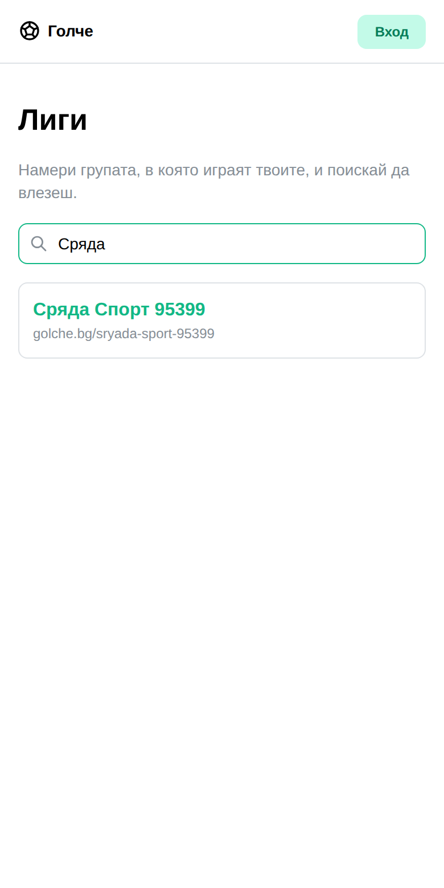
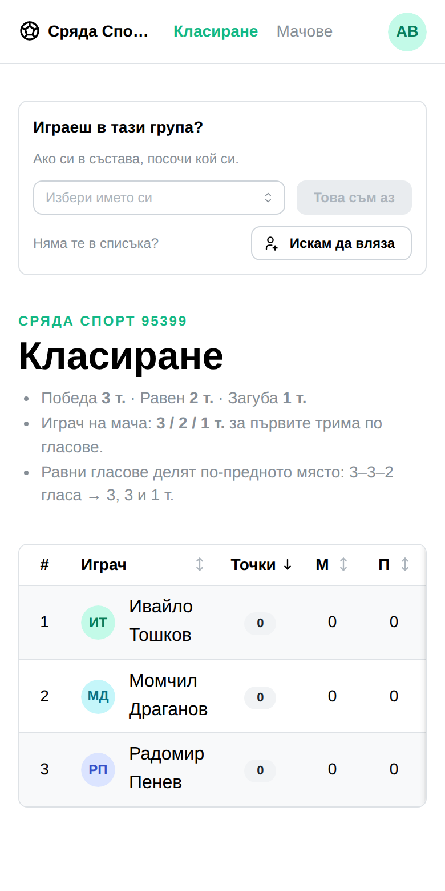
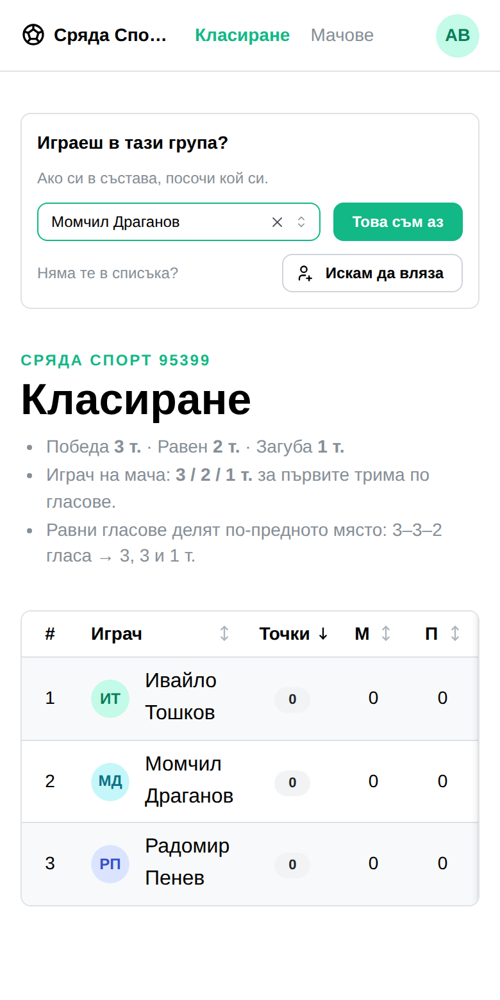
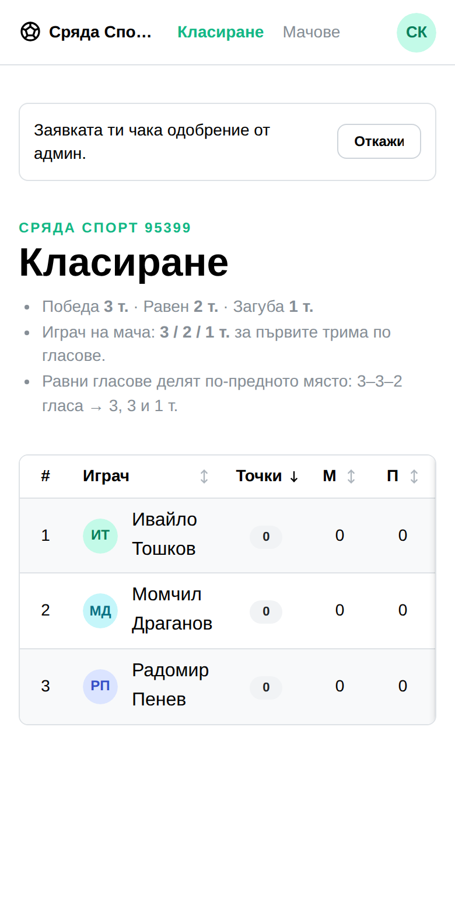
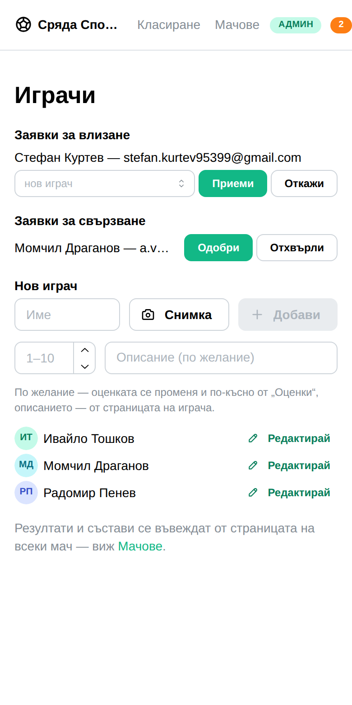
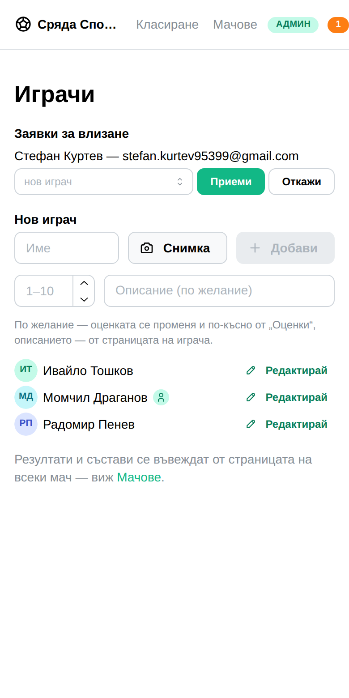

optimum-stars · OSJR
Досега всеки вход в група минаваше през админ, който трябваше да знае, че някой иска, и да му знае имейла. Сега човекът сам казва кой е, а админът само отсъжда.
Всички хора и адреси тук са измислени. Екраните са истински — снимани в браузър срещу пълния стек: регистрация, нова лига, състав, натиснат бутон, одобрена заявка.
Четири неща, едно от друго. Списък с лигите, за да те намерят. Възможност да посочиш себе си в състава — съществуваше, но се стигаше до нея само вътре в мач. Заявка за влизане, за човек, който още не е в никой състав. И число в хедъра, което казва на админа, че го чака работа.
Причината за третото. Заявките „това съм аз“ работят от седмици. Никой не ги ползваше — единственият начин да разбереш, че някой е поискал, беше да отвориш „Играчи“ напосоки. Затова изглеждаше, че функцията липсва. Опашка, за която не ти казват, е опашка, която никой не изпразва.
Публичен списък на golche.bg/leagues, с търсачка. Само име и адрес — нищо за хората вътре. Страниците на лигите и досега бяха отворени за всеки с линк; новото е, че вече могат да се намерят.

Отваряш групата и тя те пита направо. Ако си в състава — посочваш кой си. Ако те няма — искаш да влезеш. Картата я няма за човек, който вече играе там, нито за админа, нито за неразпознат посетител.
Първата врата съществуваше отпреди, но се стигаше до нея само вътре в страницата на конкретен мач, докато гласуваш. Човек, който гледа самата лига, нямаше как да я намери — затова питаше да влезе като нов и админът налучкваше кой е.

Ти знаеш кой си; админът не знае. Затова питаме теб.

Името е изписано обратно към теб, за да видиш, че си избрал правилния човек. Може и да я оттеглиш, ако си сбъркал.
Който го няма в състава, просто иска да влезе. Заявката не дава нищо — нито глас, нито място в класирането.

Оранжевото число до „АДМИН“ в хедъра. Едно число за двата вида заявки. Няма го, когато няма работа — значка, която стои винаги, е значка, която никой не гледа.
„Заявки за влизане“ и „Заявки за свързване“ една под друга, на страницата „Играчи“. Всеки ред казва кой е поискал и от кой адрес.
Падащото меню е там за най-честия случай. Половината хора, които искат да влязат, са в състава от месеци под име, което админът е написал. Ако одобриш „нов играч“, лигата остава със същия човек два пъти. Затова питаме — а когато човекът сам е посочил кой е, изобщо не се налага да избираш.

Става обикновен играч в състава — не админ. Числото пада с него.
